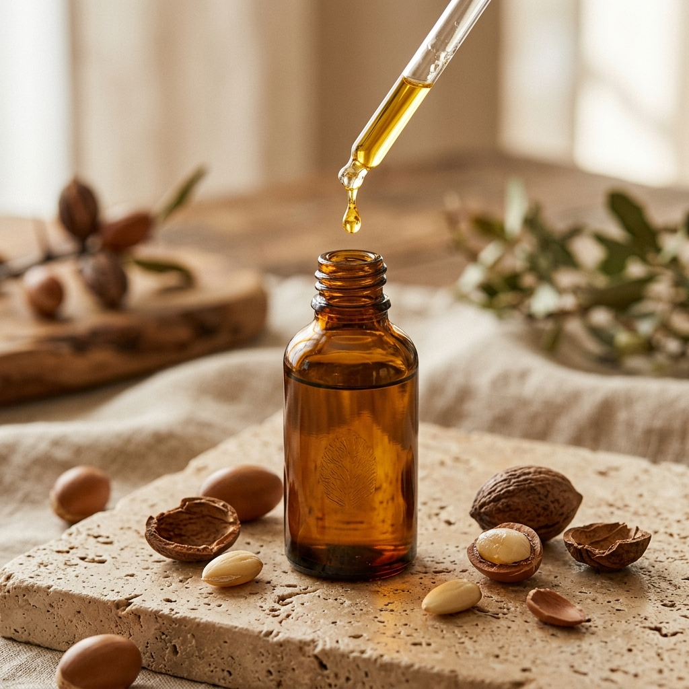

Reines Arganöl: Das flüssige Gold für samtige Haut & glänzendes Haar
Warum das kostbare Öl des Arganbaums die perfekte natürliche Antwort auf synthetische Kosmetik und chemische Seren ist.

Seit Jahrhunderten hüten die Berberfrauen Nordafrikas das Schönheitsgeheimnis eines Baumes, der als "Baum des Lebens" verehrt wird. Das daraus gewonnene Arganöl ist kein gewöhnliches Pflanzenöl – es ist ein biochemisches Meisterwerk natürlicher Haut- und Haarpflege.
Während moderne Kosmetikregale voll sind von chemischen Emulgatoren, Silikonen und künstlichen Duftstoffen, kehren immer mehr Dermatologen und Beauty-Experten zu einem reinen, unverfälschten Naturstoff zurück: 100% kaltgepresstem Reines Arganöl. Bei Anadoa Naturhaus bieten wir dieses flüssige Gold in seiner reinsten Form ohne Zusätze an.
Der Arganbaum (Argania spinosa): Ein UNESCO-Weltkulturerbe
Der Arganbaum wächst fast ausschließlich in einer geschützten Region im Südwesten Marokkos. Er übersteht Dürreperioden und Temperaturen von über 50°C, indem seine Wurzeln bis zu 30 Meter tief ins Erdreich vordringen, um Wasser und seltene Mineralien aufzunehmen.
Die Gewinnung von Arganöl ist eine der arbeitsintensivsten Aufgaben der Welt: Aus rund 30 Kilogramm Arganfrüchten (der Ernte eines ganzen Baumes) gewinnen Frauenkooperativen in aufwendiger Handarbeit gerade einmal rund 1 Liter reines Arganöl. Jeder einzelne Kern wird von Hand aufgeschlagen und schonend kaltgepresst.
Die biochemischen Star-Inhaltsstoffe
Was Arganöl so außergewöhnlich macht:
- Doppelter Vitamin-E-Gehalt von Olivenöl: Das enthaltene Alpha- und Gamma-Tocopherol neutralisiert freie Radikale und schützt Hautzellen vor UV-bedingter Lichtalterung.
- Pflanzliches Squalen: Ein natürlicher Bestandteil unseres körpereigenen Hauttalgs. Es sorgt dafür, dass Arganöl tief in die Hautschichten eindringt, ohne die Poren zu verstopfen (Komedogenitätsgrad 0).
- Ferulasäure & Phytosterole: Unterstützen die hauteigene Kollagenproduktion und beruhigen Rötungen, Neurodermitis und Ekzeme.
- Essentielle Fettsäuren (Omega-6 & Omega-9): Reparieren die gestörte Hautlipidbarriere und schließen Feuchtigkeit langanhaltend ein.
Die richtige Anwendung für maximale Ergebnisse
1. Gesicht & Dekolleté (Anti-Aging & Glow)
Tragen Sie Arganöl niemals auf völlig trockene Haut auf! Sprühen Sie Ihr Gesicht zuerst mit reinem Hydrolat (z.B. unserem Anadoa Rosenwasser) ein. Massieren Sie dann 2 bis 3 Tropfen Anadoa Arganöl mit kreisenden Bewegungen ein. Wasser und Öl verbinden sich direkt auf der Haut zu einer natürlichen Frische-Emulsion.
2. Haare & Kopfhaut (Glanz & Anti-Spliss)
Als Spitzen-Serum: Verreiben Sie 1-2 Tropfen in den Handflächen und kneten Sie es sanft in die noch feuchten Haarspitzen ein.
Als intensive Kopfhautkur: Vor der Haarwäsche 1 Esslöffel Arganöl in die Kopfhaut einmassieren, 30 Minuten unter einem warmen Handtuch einwirken lassen und anschließend gründlich auswaschen. Dies stärkt die Haarwurzeln und lindert Schuppen.
3. Körper & Nägel
Arganöl eignet sich hervorragend zur Vorbeugung von Schwangerschaftsstreifen sowie zur Stärkung brüchiger Fingernägel und weicher Nagelhaut.
Fazit: Naturreine Eleganz für Ihre Hautgesundheit
Wer einmal die seidige Textur und die nachhaltige Nährstoffkraft von unraffiniertem Reines Arganöl erlebt hat, möchte auf dieses Elixier nicht mehr verzichten. Es ist die ehrlichste, reinste und effektivste Haut- und Haarpflege, die die Natur zu bieten hat.